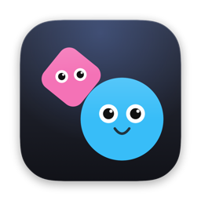

Whally · atualizada em 1 de novembro de 2026
O Whally é um app para Mac em que Bots trabalham para você. Ele não tem servidor: roda inteiro no seu Mac, e o desenvolvedor não recebe nenhum dado seu.
Quando você conecta a sua conta Google, e só com a sua permissão, o Whally pode:
O Whally usa esses dados só para fazer o que você pede aos Bots, como achar um e-mail, resumir uma conversa, preparar uma resposta ou ver a sua agenda.
Não vende os seus dados, não os usa para anúncios e não os usa para treinar modelos de IA.
O uso e a transferência, para qualquer outro app, de informações recebidas das APIs do Google pelo Whally seguem a Política de Dados do Usuário dos Serviços de API do Google, incluindo os requisitos de Uso Limitado.
No Whally, em Ajustes › Apps, desconecte a conta Google: o acesso sai do Keychain. Você também pode tirar o acesso em myaccount.google.com/permissions.
Whally is a Mac app where Bots work for you. It has no server: it runs entirely on your Mac, and the developer receives none of your data.
When you connect your Google account, and only with your permission, Whally can search and read Gmail messages and create drafts (no email is sent without your confirmation); view Google Calendar events and create or change events, always with your confirmation; search and read Google Drive files; and read your name and email address to show which account is connected. Whally uses this data only to do what you ask the Bots to do.
Your Google access stays in your Mac's Keychain. Conversations with the Bots, which may include what they read, stay on your Mac, and you can delete them at any time. To answer you, a Bot sends what it read to the AI model you chose for it (for example, Anthropic's Claude or OpenAI's Codex), through the account you connected yourself and under that service's terms. Whally sends your data to no one else.
Whally does not sell your data, use it for advertising, or use it to train AI models. Whally's use and transfer to any other app of information received from Google APIs will adhere to the Google API Services User Data Policy, including the Limited Use requirements.
To disconnect, remove the Google account in Whally under Settings › Apps, which deletes the access from the Keychain, or revoke it at myaccount.google.com/permissions. Questions: whallysson.dev@gmail.com.